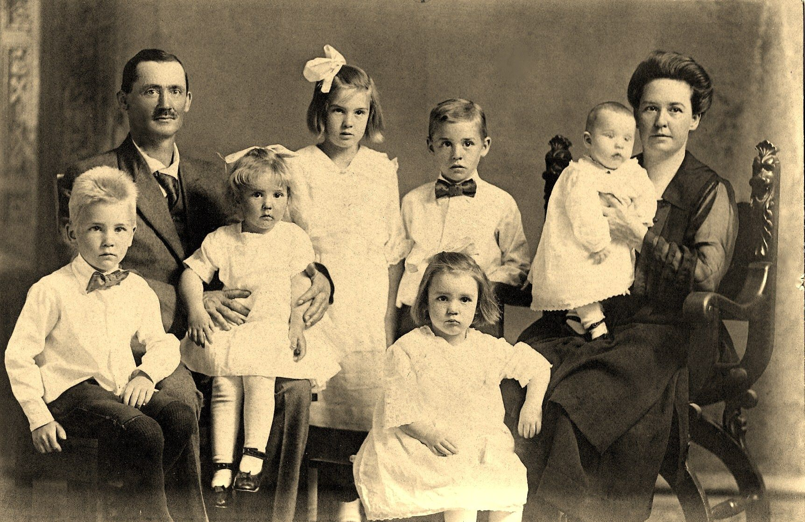

Groenten- en Fruitwinkel Blue Carrot werd opgericht in 1972 en staat al meer dan 30 jaar garant voor de beste kwaliteit in groenten en fruit. Als buurtwinkel werken wij samen met lokale producenten waardoor wij onze klanten een grote selectie aan groenten en fruit kunnen aanbieden.
 Opgericht door Alfons en Marie Janssens (foto links) en overgenomen door zijn kinderen in 2005 kunnen we met trots zeggen dat we een echt familiebedrijf zijn Uiterst professioneel en et passie voor het vak brengen we iedere dag de beste producten aan de beste prijs in onze winkel.
Dankzij onze gebruiksvriendelijke webshop is het nu ook mogelijk om uw favoriete groenten en fruit te bestellen in slechts enkele muisklikken. Onze leverancier brengt de goederen tot aan uw deur en zorgt voor een sociale babbel indien nodig.Ons motto is steeds eerlijk en gezond, zowel in de gezonde voeding als in de eerlijke relaties die we hebben met onze leveranciers waarop we steeds kunnen rekenen voor een groot en divers aanbod. Wij beschouwen deze leveranciers dan ook eerder als partners en dat zie je aan de kwaliteit. Het ganse jaar door werken wij met seizoensproducten zodat u een gevarieerde voeding heeft voorzien van alle vitaminen en energie.
Wij werken momenteel aan een eerlijk en gezond kookboek waarmee u inspiratie heeft voor elke dag van de week. Koken is immers plezant als je kan werken met producten van BLUE CARROT.
Wij stellen ons team graag aan u voor :
- Alfons Janssens : oprichter en ere-zaakvoerder
- Marie Janssens-Van Reeth : vrouw van Alfons, gepensioneerd
- Tine Janssens : dochter en algemeen zaakvoerster
- Kenny Theunis : man van Tine, verantwoordelijk voor de inkoop van groenten
- Laurence Van Tichelt : uitbaatster van de winkel in Antwerpen
- Geert Janssens : zoon en mede-zaakvoerder + IT verantwoordelijke